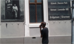

1) The District Six Museum was established to keep alive the memories of District Six
and displaced people everywhere.
2) The District Six Museum curates and manages
a unique collection of historical materials, fine prints and paintings,
3) District Six Foundation was founded in 1989 and the museum in 1994
Vuyisa Ndubela

The Roman empire the City I would love to Visit

Rome has an almost overwhelming amount of ancient sites, bubbling fountains, spectacular art galleries and elaborate churches.
Common latin phrases to english
| Latin Phrase | English translation |
|---|---|
| 1. From the sky to the center | 1. A caelo usque ad centrum |
| 2. To set forth from false principles | 2. A falsis principiis proficisci |
| 3. From sunrise to sunset | 3. A solis ortu usque ad occasum |
Historical places in Cape Town
The Museum District Six

Castle of good hope

1) In 1936, the Castle was
declared a National Monument.
2) Today, after land reclamation, the Castle stands almost a kilometre inland in the Central
Business District.
3) The Castle was built by soldiers, volunteers,
slaves and Khoisan people undergoing punishment
with local material
the City Hall

1) city centre which was built in 1905. It is located on the Grand Parade
2) On February 11, 1990, only hours after his release from prison,
Nelson Mandela made his first public speech from the balcony
of Cape Town City Hall.
3) The building was designed as the result of a public competition,
the winning architects being Messrs Harry